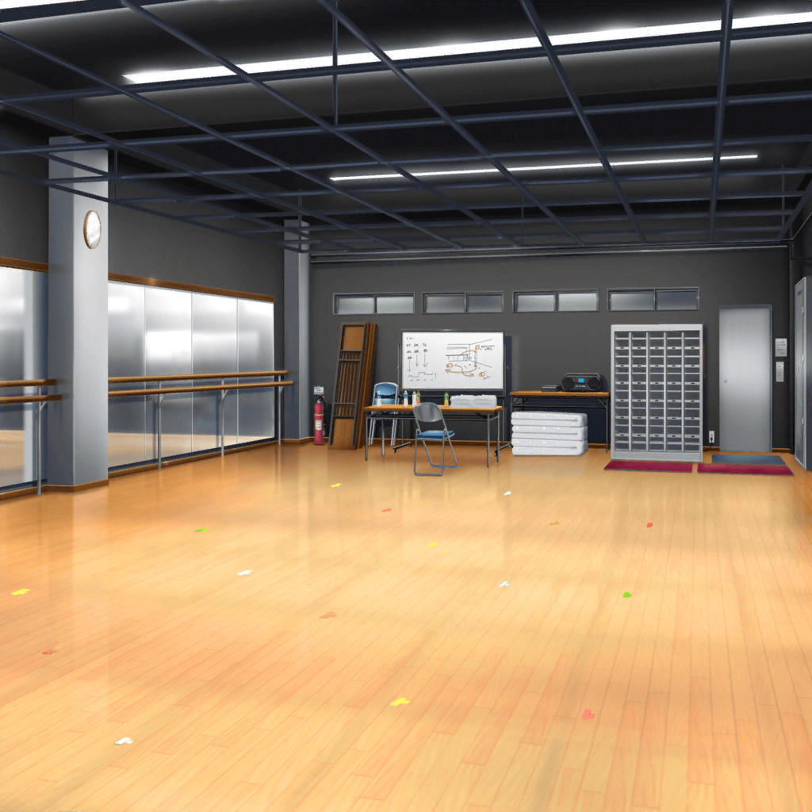

芸能事務所
麻弥
千聖さん、どうしちゃったんでしょうか。心配ですね……
日菜
あたし、千聖ちゃん怒らせるつもりなんて
なかったんだけどなぁ……
イヴ
演出家の先生も怖かったけど、
チサトさんはもっと怖かったです……
彩
うん、私ならあんなにダメ出しされたら、
どう演技していいかわからなくなっちゃうかも……
麻弥
ジブンが千聖さんだったら、しばらく落ち込みそうです
日菜
だいたいさー、ダメ出しばっかりじゃ
どう演技すればいいのか、わかんないよね
彩
……
彩
千聖ちゃん、私たちが見学に来た時点で
様子がおかしかったように見えたんだよね
イヴ
本当ですか、アヤさん！
彩
うん、何かいつもと違った感じがしたんだけど、
なんだったんだろう。
何か理由があると思うんだけど……
日菜
確かに、顔色も悪かったしねー。
体調が悪いんじゃないなら、なんだろ
麻弥
うーん……もしかして……
イヴ
マヤさん、何か心当たりがありますか？
麻弥
千聖さん、『私がなんでもできるって思わないで』って
言ってたじゃないですか
麻弥
ということは、千聖さんもできないことがあるってことじゃ……
イヴ
チサトさんもできないこと？
そんなことってあるんでしょうか？
今まではなんでもできていたのに……
麻弥
その『なんでもできていた』というのが、
そもそも違うのかもしれませんね
彩
あんなに苦戦してる千聖ちゃん、見たことないね……
日菜
前は『できてた』のに、今は『できない』ってこと？
あーもう、よくわかんないよー
麻弥
落ち着いて考えてみましょうよ
麻弥
ジブン、千聖さんから『努力はするのが前提』って
聞いたことがあるんです。ということは、
努力して『できない』を『できる』ようにしてたってことですよね
彩
そっか……そうだよ！ わかった！
日菜
何がわかったの？
彩
千聖ちゃん、いい演技ができるように努力してたのに、
稽古が上手くいってなくて……どうしたらいいかわからなくて
つらくなっちゃったんじゃないかな
彩
きっと千聖ちゃんは私たちの見えないところで
ずっとがんばってたんだよね……なのに……
日菜
そこにあたしたちががんばれがんばれ、って言ったから、
プレッシャーになっちゃったってこと？
麻弥
そういうことになりますね……

宮川
ストップ！
おいおい、白鷺くん！ どうしてその声の出し方になるんだ？
全く熱くないじゃないか！
千聖
どうしてって……
千聖
（私は私なりに考えてやっているのに！）
イヴ
なるほど……
アヤさんとマヤさんに言われて、初めて気付きました！
チサトさんは見えないところで努力していたんですね！
イヴ
私、チサトさんはすぐになんでもできて
完璧だなって思ってたんです
イヴ
でも、そうじゃなかったんですね
彩
私たち、無意識かもしれないけど、
『元子役の千聖ちゃん』って目線で見ていたよね。
私たちとは違うから、なんでもできるんだって
彩
千聖ちゃんのこと誤解してたよね。
元子役とか関係なくて、千聖ちゃんは千聖ちゃんなんだもん。
私たちと一緒で、努力してる女の子なんだよね
麻弥
そうですよっ！
日菜
ちゃんと説明すれば、
千聖ちゃんならわかってくれると思うよ
彩
うん。明日、千聖ちゃんに謝ろう！
それで、応援してるんだよって伝えよう！
イヴ・日菜・麻弥
おー！
 稽古終了後
稽古終了後
帰り道
千聖
はぁ……
千聖
（みんなに『私がなんでもできるって思わないで！』なんて
言ってしまったわ……
変に思われたわよね……）
千聖
……
千聖
……もしもし、花音？
花音
『もしもし、千聖ちゃん？
電話してくるなんてめずらしいね、どうしたの？』
千聖
ちょっと、聞いてほしいことがあって……
急で申し訳ないのだけど、もし時間があったら
今からファミレスに来てほしいの
花音
『うん、大丈夫だよ。すぐ行くね！』